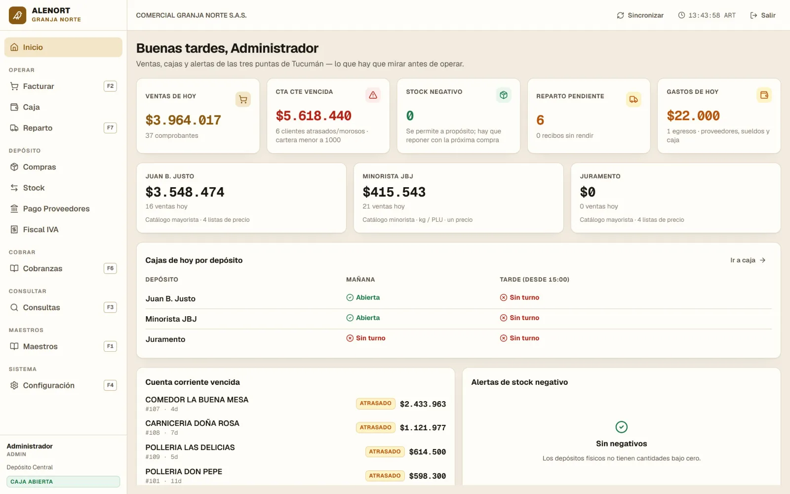
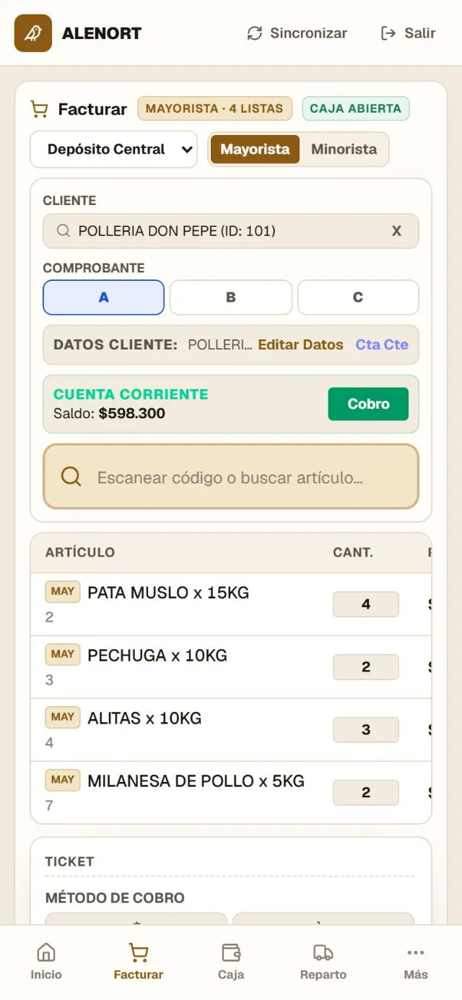
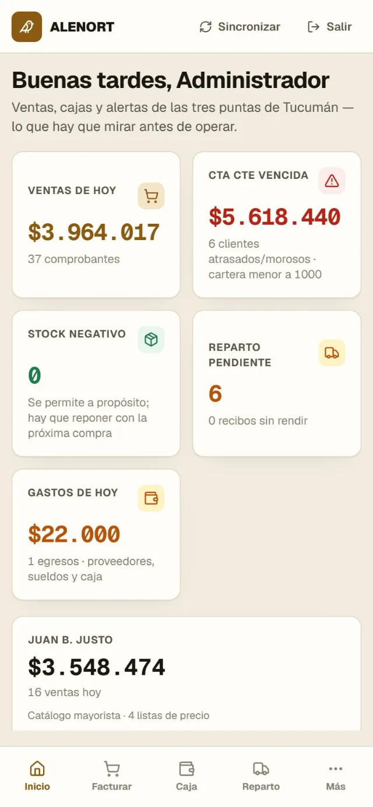
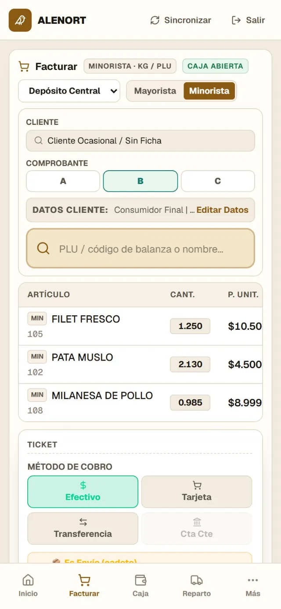
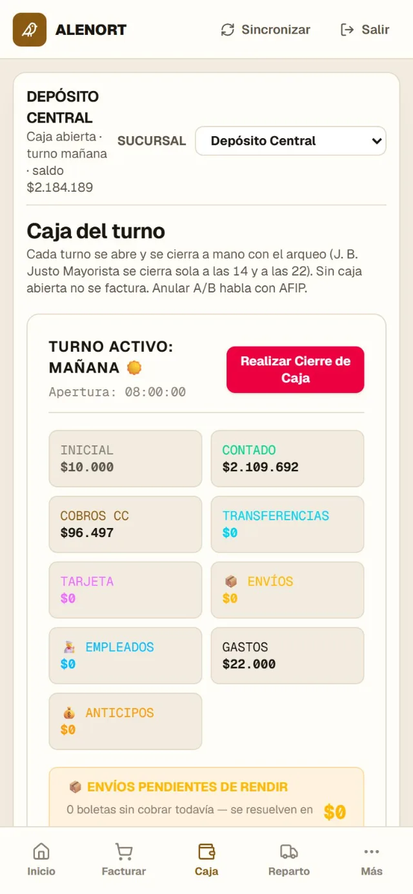
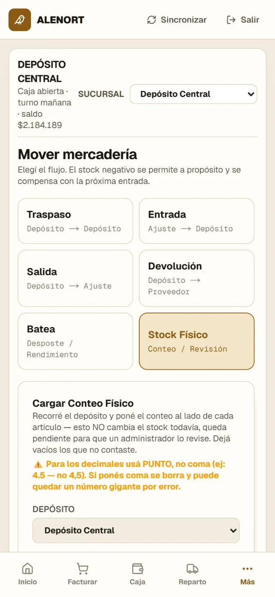

Tu pollería ordenada, sin cuaderno y sin planillas.
Ventas, stock, caja, cuentas corrientes y reparto en un solo sistema. Lo usás desde la computadora del local o desde el celular, y todas las computadoras ven lo mismo al instante.


Los problemas de siempre, resueltos de una vez
Todo el negocio en un solo lugar
Pensado para el rubro: venta mayorista por unidad, mostrador por kilo, reparto y clientes en cuenta corriente.
Facturación
Factura A, B y C con factura electrónica de AFIP. Cuatro listas de precio por cliente.
Venta por kilo
Mostrador con códigos de balanza (PLU). El stock se descuenta en kilos.
Stock en tiempo real
Cada venta descuenta al instante en todas las computadoras. Kardex por producto.
Caja por turno
Efectivo, tarjeta, transferencias, gastos y retiros. Cierre con conteo de billetes.
Cuentas corrientes
Saldos, vencimientos, cobranzas y alertas de clientes atrasados o morosos.
Reparto
Boletas pendientes hasta que el repartidor rinde: qué se cobró y qué volvió.
Compras y costos
Remitos de proveedores con costo promedio real y pagos a proveedores.
Reportes
Ventas, ganancia por categoría, gastos, mejores clientes y exportación a Excel.
Mirá cómo es por dentro
Estas son pantallas reales del sistema, cargadas con datos de ejemplo. Tocá una captura para verla grande.
El negocio en tu bolsillo
Mirá las ventas del día desde tu casa, facturá desde el depósito o hacé el conteo de stock recorriendo la heladera. Sin instalar nada: se abre en el navegador.




Lo hicimos para nuestro propio negocio
En Alenort teníamos los mismos problemas que cualquier pollería: fiados en el cuaderno, cajas que no cerraban y stock que nunca coincidía. Con Nicode.js armamos este sistema a la medida del rubro.
Hoy maneja todo el negocio todos los días: varias computadoras y celulares facturando al mismo tiempo, mayorista y mostrador, reparto y cuentas corrientes.
Empezar es simple
Te lo muestro
Pasás por Alenort y lo ves funcionando en un negocio real, o lo vemos juntos en tu local.
Cargamos tu negocio
Tus productos, precios, clientes y saldos. Así arrancás con todo listo.
Te acompaño
Te enseño a vos y a tus empleados a usarlo, y quedo a mano para lo que necesites.
Lo que todos preguntan
¿Tengo que instalar algo?
No. Se usa desde el navegador, en cualquier computadora o celular. Entrás con tu usuario y contraseña.
¿Puedo usarlo en varias computadoras a la vez?
Sí. Varias computadoras y celulares pueden facturar al mismo tiempo, y el stock y la caja se actualizan en todas al instante.
¿Hace factura electrónica?
Sí, factura A y B electrónica con AFIP, y también comprobantes C de uso interno.
¿Sirve para venta por kilo con balanza?
Sí. El mostrador trabaja con códigos de balanza (PLU) y descuenta el stock en kilos.
¿Qué pasa si se corta internet?
Sin internet no se puede facturar, porque cada venta se guarda en la nube en el momento. Lo bueno es que nada queda a medias: si la venta no se pudo guardar, el sistema te avisa, no imprime el ticket y te deja el carrito armado para facturarla cuando vuelva la conexión, sin duplicarla.
¿Mis empleados ven todo?
No. Cada empleado entra con su usuario y ve solo las pantallas que le habilitás.
¿Cuánto cuesta?
Depende del tamaño de tu negocio y de cuántos locales tengas. Escribime y lo charlamos sin compromiso.
¿Lo vemos funcionando?
Escribime por WhatsApp y coordinamos. Te lo muestro en Alenort o en tu local, sin compromiso.